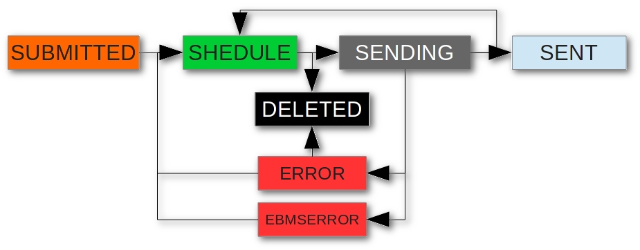

Logični model
Jože Rihtaršič, 12.2.2016
Aplikacija Laurentius je sestavljena iz modulov:
- modul SED-WS: spletni servisi (WSDL) namenjeni integraciji z zalednimi sistemi;
- modul vtičniki: modul omogoča dodajanje vtičnikov za izvajanje „poslovnih tokov“ v storitvah vročanja, ter možnost izvajanja dodatnih kontrol dohodnih sporočil;
- modul ebMS 3.0: implementacija ebMS 3.0 standarda;
- modul GUI: Grafični vmesnik za nadzor in spremljanje dohodne in izhodne pošte.
Modul SED-WS
Namen modula spletnega vmesnika je omogočiti izdelavo integracije Laurentius z zalednimi sistemi za pošiljanje izhodne in prevzemanje dohodne pošte v zaledne sisteme. Naloga modula je tudi izdelava evidence izhodnih in dohodnih pošiljk ter beleženje in hranjenje vseh dogodkov na izhodni in dohodni pošti. Dodatno je pri izhodni pošti naloga preverjanje skladnosti sporočil s „p-mode“ nastavitvami. Pri tem se preverja obstoj p-mode konfiguracije za naslovnika, poslovni kontekst „storitev, akcija“, vsebovanost metapodatkov in vsebin, ki jih sporočilo mora vsebovati.Modul vtičniki
Namen modula je omogočiti poljubno poslovno logiko pri preverjanju dohodne in izhodne pošte ter omogočiti avtomatizirano izvajanje „poslovnih tokov“ v posameznih storitvah. Kot primer je priložen vtičnik, ki skrbi za elektronsko vročanje v storitvi ZPPDelivery. Kjer pri izhodni pošti zgenerira ključ za simetrično šifriranje ter šifrira vse vsebine. Ob sprejemu povratnice vrne ključ za dešifriranje pošiljatelju povratnice. Na drugi strani ob sprejemu pošiljke s storitvijo ZPPDelivery avtomatično izdela povratnico, jo podpiše z naslovnikovim certifikatom ter jo posreduje pošiljatelju pošiljke. Hkrati naslovniku posreduje dohodno pošiljko „Obvestilo o prispeli pošiljki“. Ob sprejemu ključa za dešifriranje, dešifrira dohodno pošiljko in jo preko SED-WS v dešifrirani obliki omogoči za prevzem v zaledne sisteme. Pri izhodni pošti sta modula SED-WS in modul „vtičniki“ povezana preko JMS tehnologije. Tako lahko administrator določa število „worker-jev“, ki pošiljajo pošiljke v ciljne sisteme.Modul ebMS 3.0
Namen modula je implementacija ebMS 3.0 standarda za varno in zanesljivo vročanje. Modul glede na p-mode konfiguracijo zapakira sporočilo ebms 3.0 obliko, jo podpiše/kriptira, opremi s parametri za zanesljiv prenos ter jo posreduje v naslovnikov sistem. Na naslovnikovi strani preveri veljavnost popisa, avtenticira pošiljatelja ter poišče ustrezno p-mode konfiguracijo. (Pravila izmenjave ti. „e-delivery agreement“ se nahaja v p-mode konfiguraciji, ki mora biti usklajena med pošiljateljem in prejemnikom). V primeru uspešnega sprejema se dohodno sporočilo preko modula „SED-WS“ omogoči na prevzem v zaledne sisteme. V primeru neveljavnega podpisa in neskladja s p-mode konfiguracijo pošiljatelju vrne ustrezno EBMS 3.0 napako.Modul GUI – grafični vmesnik
Grafični vmesnik je namenjen za administracijo Laurentius aplikacije ter za pregled izhodne in dohodne pošte za posamezne predale. Administracija Laurentius vsebuje izdelavo in urejanje posameznih p-mode nastavitev., dodajanje novih predalov ter nastavitev za spremljanje delovanja aplikacije Laurentius. V primeru pregleda izhodno dohodne pošte za posamezne e-predale omogoča pregled in iskanje izhodne in dohodne pošte ter pregled vseh dogodkov pri vročanju oz. prejemu pošte.Statusi izhodne in dohodne pošte
Pošiljka pri odpremi in sprejemu gre skozi različne statuse. Statuse pošiljke spreminjajo dogodki na pošiljki ti. "eventi". Ni pa nujno, da vsak dogodek na pošiljki spremeni status pošiljke. Npr. V statusu pošiljanje se lahko izvede več dogodkov: kriptiranje, podpisovanje, "plugin obdelava" itd. Pri vseh dogodkih (posledično sprembah statusa) se beleži čas dogodka, aplikacijo, ki je prožila dogodek, ter v primeru človeškega posega: id uporabnika, ki je sprožil dogodek.Izhodna pošta
Prvi status izhodne pošiljke je "SUBMITTED". Pošiljka je uspešno dodana v pošiljanje, če je skladna, s katero izmed PMode konfiguracijo. Končni status pošiljke je status SENT. V primeru, da je v pošiljko v statusu ERROR, je potreben administratorski poseg, ki odstrani vzrok napake ter ponovno sproži pošiljanje oz. pošiljke izbriše. V nadaljevanju je opis statusov z barvnimi oznakami. Barve posamezne pošiljke se prikazujejo v uporabniški aplikaciji, pri posamezni pošiljki.
| Status | Barva | Naziv | Opis |
|---|---|---|---|
| SUBMITTED | orange | Pripravljena | Pošiljka uspešno oddana v odpremo. V primeru, da je pošiljka nepopolna: ne obstaja PMode konfiguracija ali pošiljka ni skladna s PMode konfiguracijo se pošiljka zavrne, še pred sprejemom. |
| SCHEDULE | green | Ponovno pošiljanje | Zaradi napake pri pošiljanju (TCP/HTTP),se pošiljka ponovno poskuša oddati skladno z urnikom ReceptionAwareness/Retry) |
| PUSHING | gray | V pošiljanju | Pošiljka se pripravi za odpremo (kriptiranje, podpisovanje itd.) ter se poskuša oddati v naslovnikov MSH. V tem statusu so lahko samo sporočila, ki imajo MEP (mesage exchange pattern) določeno pošiljanje PUSH. V primeru TCP/HTTP, SOAP napake se skladno s PMODE konfiguracijo (ReceptionAwareness/Retry) ponovno poskuša oddati. Pri tem pošiljka preide v status RESEND. V primeru napake pri pripravi na pošiljanje in po preteku števila poskusov oddaje, se pošiljka prestavi v status "ERROR". |
| PULLREADY | gray | V pošiljanju | Pošiljka je pripravljena na prevzem in čaka na signal za PULL. V tem statusu so lahko samo sporočila, ki imajo MEP (mesage exchange pattern) določeno pošiljanje PULL |
| SENT | blue | Odpravljeno | Pošiljka je upešno dostavljena na naslovnikov MSH |
| ERROR | red | Napaka | Napaka pri pripravi na odpremo oz. pošiljka se v predvidenih poskusih ni uspela prenesti na naslovnikov MSH. Zato se je pošiljanje končalo. Koda napake! |
| FAILED | darkred | Neuspešna dostava | Pošiljka ni bila uspešno prenesena na naslovnikov MSH |
| DELETED | black | Izbrisana | Pošiljka je „ročno“ izbrisana |
Dohodna pošta
V primeru, da za dohodno pošiljko obstaja PMode konfiguracija in je skladna s konfiguracijo, se pošiljka zapiše v tabelo dohodne pošte s statusom: RECEIVE. V primeru, da ne obstaja PMode konfiguracija oz. pošiljka ni skladna s konfiguracijo, se pošiljatelju vrne ustrezno sporočilo. Pošiljka je na voljo za prevzem v zaledne sisteme, ko je v statusu RECEIVED. Ko aplikacija prevzame pošiljke se ta nastavi v status DELIVERED. V nadaljevanju je opis statusov z barvnimi oznakami. Barve posamezne pošiljke se prikazujejo v uporabniški aplikaciji, pri posamezni pošiljki.| Status | Barva | Naziv | Opis |
|---|---|---|---|
| RECEIVE | orange | V sprejemu | Sporočilo sprejeto. Za pošiljko obstaja PMode konfiguracija in je skladna z nastavitvami v PMode konfiguraciji. |
| PROCESS | gray | V obdelavi | V primeru, da se za sprejeto pošiljko zaganjajo "plugin" procedure, se pošiljki spremeni status v PROCESS. |
| RECEIVED | green | Sprejeto | Pošiljka je pripravljena za prevzem v končno aplikacijo. |
| LOCKED | lightgray | V prevzemanju | Pošiljka je v prevzemanju v zaledni sistem. V primeru, da prevzemanje traja dlje časa lahko končna aplikacija v času prevzemanja zaklene pošiljko. |
| DELIVERED | blue | Pošiljka dostavljena v kočno aplikacijo | Pošiljka je uspešno prevzeta v kočno aplikacijo |
| ERROR | red | Napaka | Napaka procesiranju dohodne pošte. Potreben je poseg administratorja |
| DELETED | black | Izbrisana | Dohodna pošiljka je izbrisana. Pošiljko lahko izbriše administrator ali končna aplikacija v primeru, da je pošiljka brez predmetna |
Statusi pošiljke od pričetka pošiljanja do prevzema v končni sistem.
Projekt Laurentius
Projekt Laurentius je izdelan z maven tehnologijo, kar omogoča CI (Continuous integration) razvoj ter uporabo različnih IDE, ki podpirajo maven projekte. Aplikacija je sestavljena modularno in sledi logičnemu modelu predstavljenem na začetku tega dokumenta. Sestava embs-sed projekta:- Laurentius: osnovni projekt določa vse plugin-e in verzije odvisnih knjižnic;
- Laurentius-libs: skupne knjižnice, ki jih uporabljajo posamezni moduli;
- ebms-msh-xsd: modul generira java objekte iz ebMS 3.0 shem. SOAP_1.1.xsd, SOAP_1.2.xsd, xml.xsd, ebms-header-3_0-200704.xsd, ebbp-signals-2.0.xsd, xenc-schema.xsd, xmldsig-core-schema.xsd, xlink.xsd.
- Laurentius-wsdl:modul generira java klienta in WS-API iz spletnega opisa (wsdl) SED-WS modula.
- Laurentius-plugin:Vmesnik za pisanje vtičnikov.
- Laurentius-commons:skupna orodja in šifiranti.
- Laurentius-module: implementacija Laurentius spletnih storitev.
- Laurentius-web: implementacija web-gui vmesnika.
- Laurentius-ws: implementacija api-vmesnika - spletne storitve.
- ebms-msh-module: implementacija Laurentius spletnih storitev.
- ebms-msh-cxf: implementacija cxf - interceptorja z funkcionalnostmi MSH (ebms 3.0) .
- ebms-msh-ejb: implementacija JMS Vrste, .
- ebms-msh-ws: implementacija vstopne točne za povezovanje MSH
- ebms-msh-ear: izdelava namestitvenega paketa (ear) za namesitev na JEE aplikacijski strežnik
- ebms-msh-standalone: Standalone aplikacija za namene testiranja in spozavanja z aplikacjo Laurentius.
- Laurentius-libs: skupne knjižnice, ki jih uporabljajo posamezni moduli;